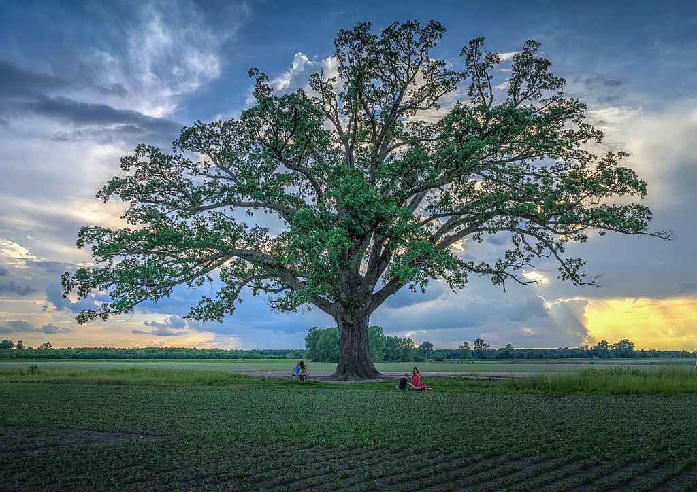
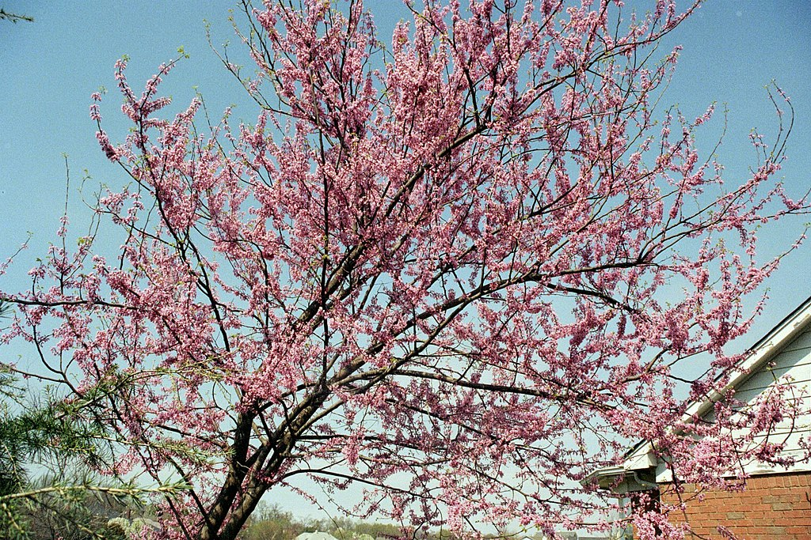
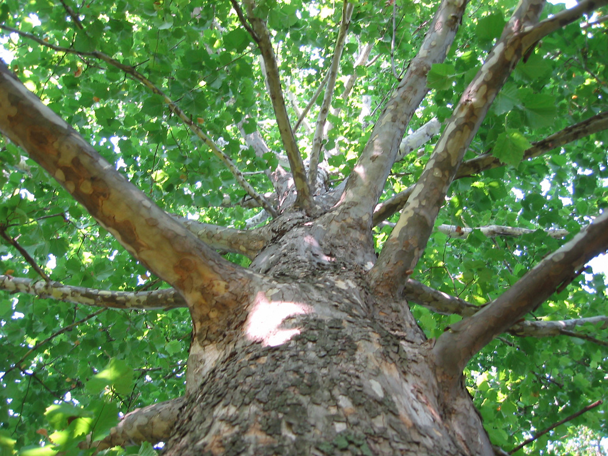
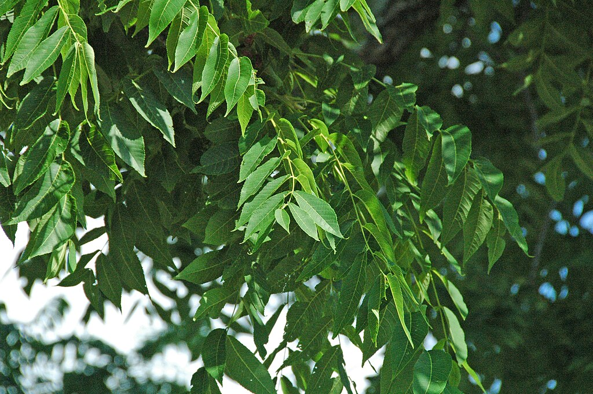
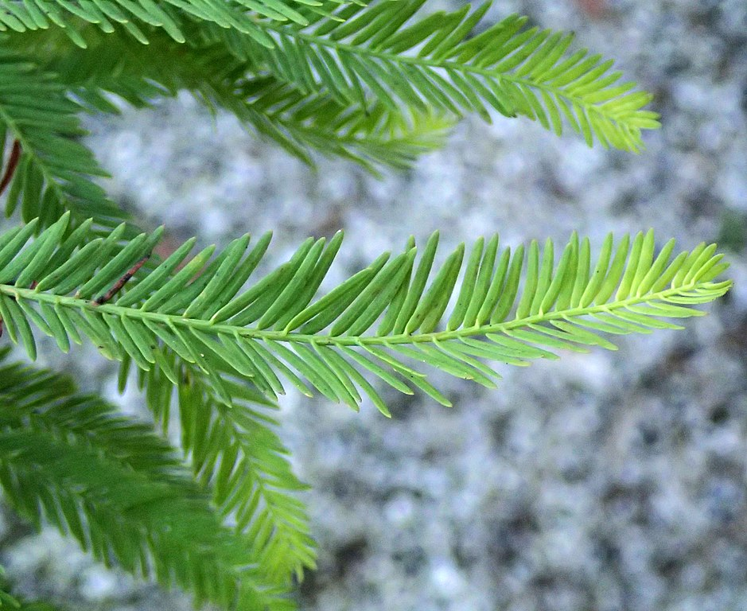
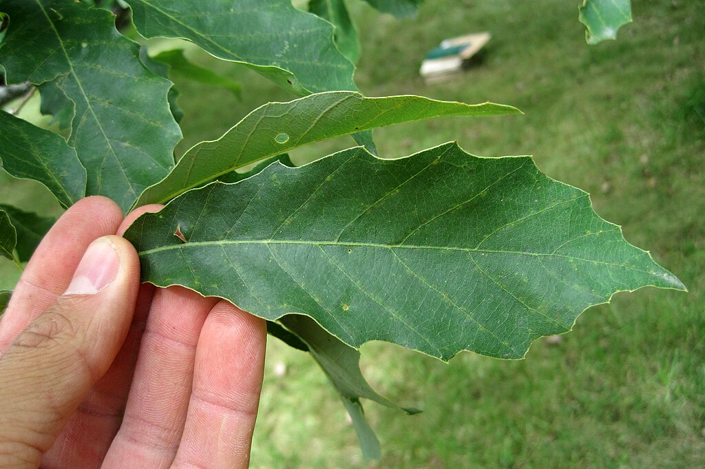
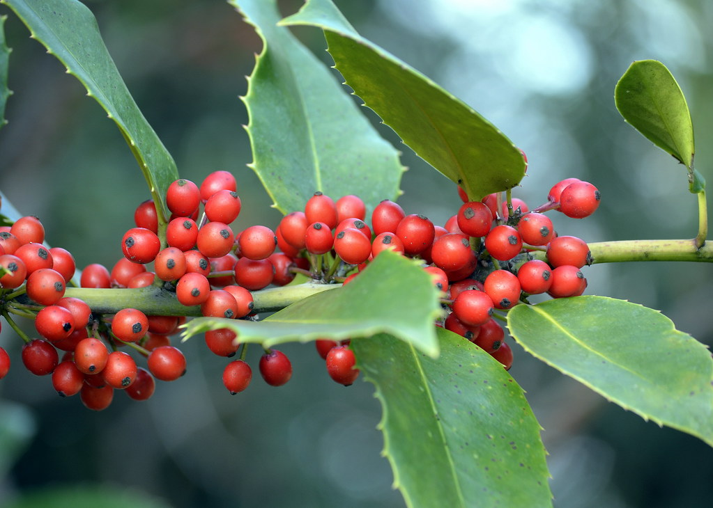
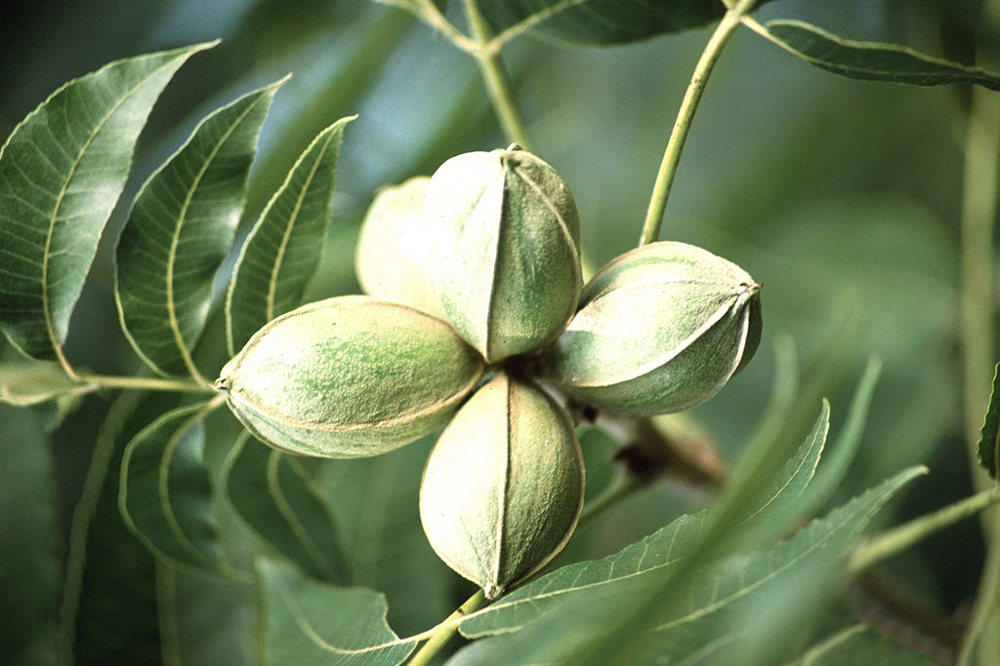

When designing a sustainable and resilient landscape in Oklahoma, choosing native trees is one of the best decisions you can make. Native trees are well adapted to the region's climate, soil, and weather extremes, making them more drought-resistant, pest-resistant, and beneficial to local wildlife.
Species selection is not simply a question of finding a tree that can survive Oklahoma. Mature size, site exposure, soil conditions, available rooting space, drainage, infrastructure, and the long-term purpose of the tree all matter.
The following trees offer a useful starting point when considering resilient species for Oklahoma properties.
Why Choose Native Trees?
Native trees offer several advantages over many poorly adapted ornamental species.
- Drought tolerance: trees adapted to Oklahoma's climate often establish more resilient root systems and better tolerate periods of limited rainfall.
- Wildlife habitat: native trees provide food, shelter, nesting opportunities, and ecological relationships for birds, insects, and other wildlife.
- Soil adaptability: many native species are naturally suited to the clay, limestone, sandy loam, and other soil conditions found across Oklahoma.
- Long-term resilience: appropriate species often require fewer corrective inputs once properly established.
Bur Oak Quercus macrocarpa

Bur oak is a majestic, long-lived tree that performs well in Oklahoma and tolerates a broad range of soil conditions. Once established, its substantial root system gives it good drought tolerance, while its broad crown can provide significant shade.
This is not a tree for a cramped planting strip. Given enough room, however, a bur oak can become one of the defining trees of a property.
Notable qualities
- Strong drought tolerance once established
- Acorns provide food for wildlife
- Large mature canopy
- Potentially exceptional longevity
Eastern Redbud Cercis canadensis

Eastern redbud is a familiar Oklahoma understory tree, valued for its vivid pink-purple spring flowers and relatively compact mature size.
It can fit landscapes where a large oak, sycamore, or pecan would eventually overwhelm the available space. Its flowers also provide early-season resources for pollinators.
Notable qualities
- Distinctive early spring flowering
- Useful smaller-scale landscape tree
- Supports pollinators
- Adaptable to many residential settings
American Sycamore Platanus occidentalis

American sycamore is a fast-growing native canopy tree recognized by its large leaves, pale exfoliating bark, and impressive mature scale.
It naturally favors sites with access to moisture and can become enormous. Because of that mature size, placement is especially important around homes, utilities, driveways, and confined residential spaces.
Notable qualities
- Rapid canopy development
- Distinctive exfoliating bark
- Large shade-producing crown
- Important habitat value at maturity
Black Walnut Juglans nigra

Black walnut is a productive native tree capable of developing into a substantial canopy tree. It produces edible nuts, supports wildlife, and is well known for the value of its timber.
Placement should be considered carefully. Black walnut produces juglone, a naturally occurring compound that can inhibit some sensitive plants growing nearby.
Notable qualities
- Produces edible walnuts
- High-value wood
- Useful canopy and shade
- Strong wildlife value
Bald Cypress Taxodium distichum

Bald cypress is often associated with wetlands, but it can be surprisingly adaptable once established. Its fine-textured foliage turns copper-colored before dropping in autumn, giving it a distinctive seasonal character.
Its tolerance of wet ground can make it especially useful on properties where drainage and periodic saturation limit other tree choices.
Notable qualities
- Excellent tolerance of wet soils
- Adaptable after establishment
- Distinctive fall coloration
- Long-lived mature form
Chinquapin Oak Quercus muehlenbergii

Chinquapin oak is a medium-to-large oak with attractive toothed leaves and a natural affinity for limestone-rich, alkaline soils.
That makes it especially interesting in landscapes where soil chemistry limits species that prefer more acidic conditions.
Notable qualities
- Tolerates alkaline and limestone-derived soils
- Good drought tolerance once established
- Acorns support wildlife
- Develops into a substantial shade tree
American Holly Ilex opaca

American holly provides something many native deciduous trees cannot: year-round evergreen structure.
Its dense foliage and persistent fruit can provide shelter and winter food for birds while functioning as a specimen, screening tree, or component of a layered woodland edge.
Notable qualities
- Evergreen foliage
- Winter wildlife value
- Useful for screening and structure
- Moderate mature scale compared with large canopy trees
Pecan Carya illinoinensis

Pecan is one of the region's great canopy trees. Given enough rooting space and suitable conditions, it can become a dominant landscape feature while producing edible nuts and significant shade.
Its mature dimensions should be taken seriously. A pecan planted too close to structures or beneath overhead infrastructure may eventually create conflicts that were entirely predictable when the tree was young.
Notable qualities
- Produces edible pecans
- Develops a substantial shade canopy
- Potential for great longevity
- Strong regional character
Planting and Establishment Matter as Much as Species
Choosing an appropriate species is only the beginning. Many landscape tree failures originate during installation rather than decades later when symptoms finally become obvious.
Choose the mature location, not the young-tree location
A young tree may occupy very little space, but its mature crown and root system may eventually interact with buildings, pavement, fences, utilities, neighboring trees, and overhead lines. Plant for the tree it will become.
Respect the root flare
The trunk should transition visibly into the root system near grade. Excessively deep planting can bury the natural root flare and contribute to long-term structural and physiological problems.
Match the tree to drainage and soil conditions
A species that performs well in one Oklahoma soil may struggle badly only a short distance away where compaction, drainage, fill soil, or construction history are different.
Water through establishment
Even drought-tolerant species need adequate water while their root systems are establishing. Drought tolerance at maturity should not be confused with immunity to establishment stress.
Mulch without burying the trunk
Mulch can protect soil moisture, moderate temperature, reduce competition, and protect the trunk from mower and string-trimmer damage. It should not be piled against the trunk.
Develop structure while the tree is young
Early structural pruning can often address competing leaders, poorly attached branches, and future clearance conflicts while cuts are still small and easy for the tree to compartmentalize.
A Tree Is a Long-Term Decision
Trees such as bur oak, eastern redbud, American sycamore, black walnut, bald cypress, chinquapin oak, American holly, and pecan can all have a place in Oklahoma landscapes.
The better question is not simply, “Is this a good tree?”
It is: Is this the right tree, in the right place, under the right conditions, for the next several decades?
That is where thoughtful tree selection becomes stewardship.